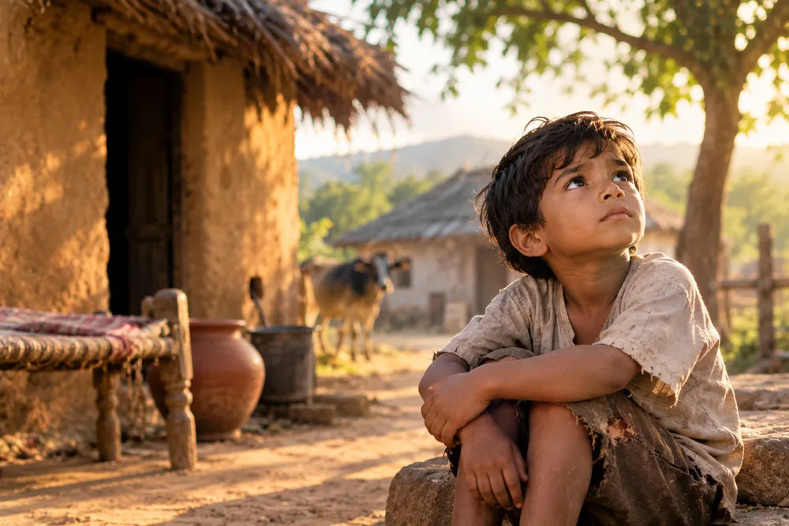
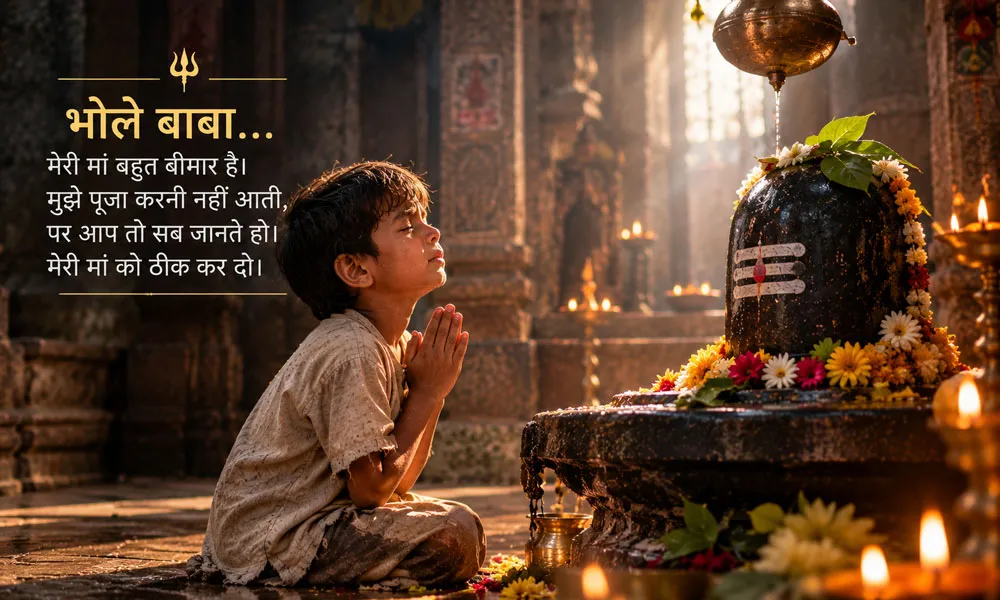
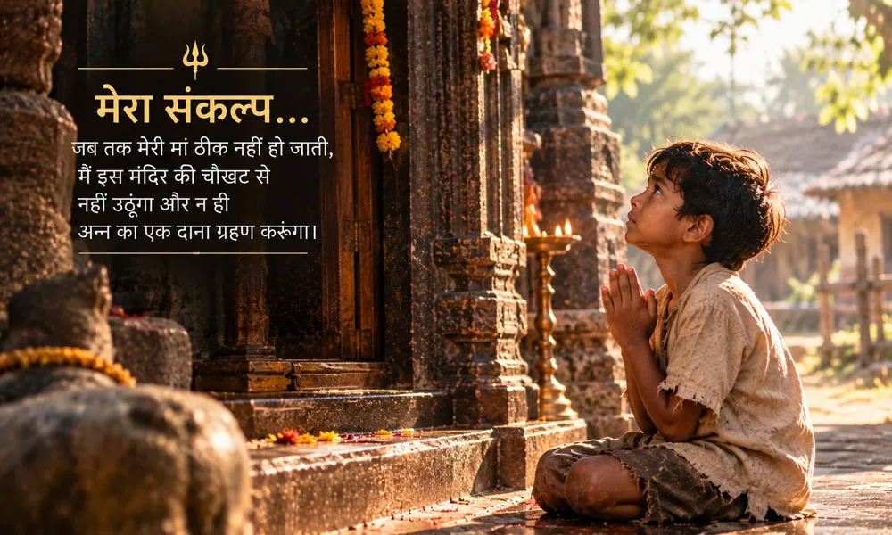
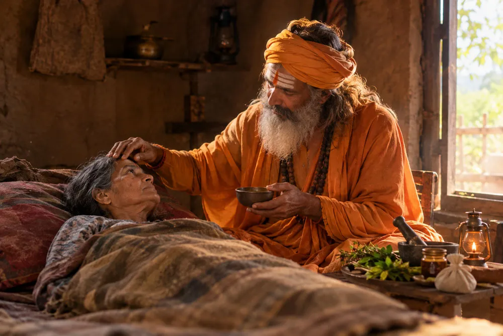
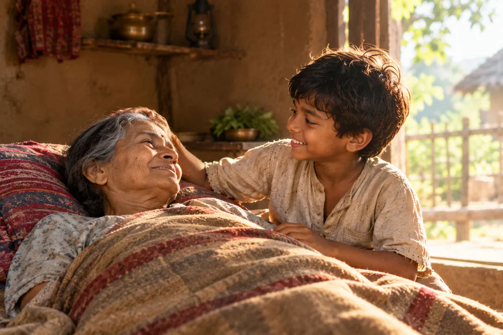
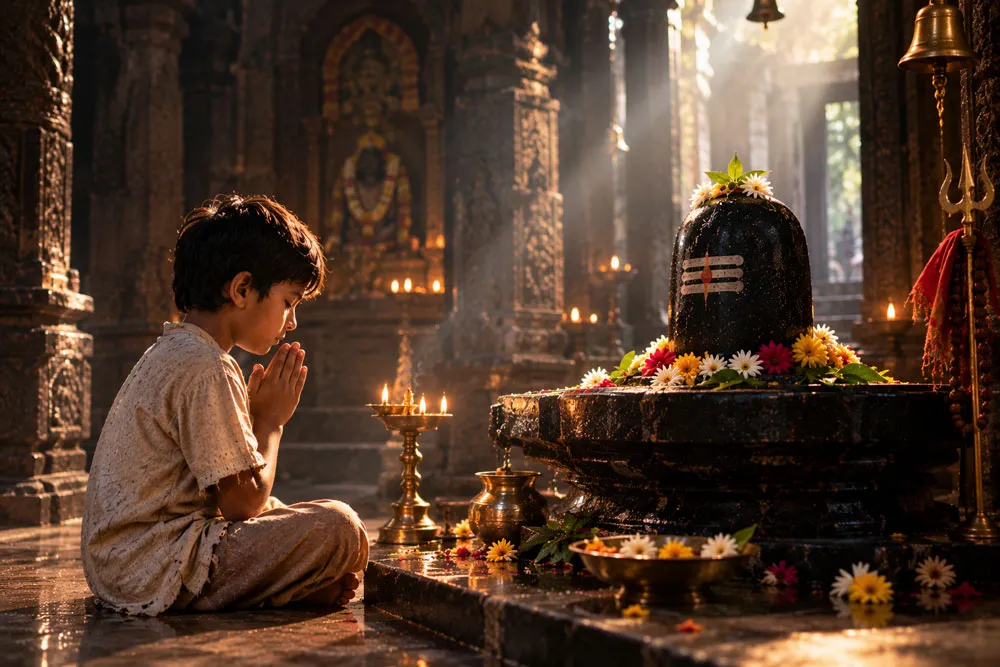

दीपक के पास बहुत कम था

दीपक बहुत छोटा था, लेकिन उसने जीवन को अपनी उम्र से कहीं पहले समझना शुरू कर दिया था। पिता के जाने के बाद घर की जिम्मेदारियां उसकी मां के कंधों पर आ गई थीं। वह किसी तरह घर चलाती और दीपक को पालती थी।
उनके घर में बहुत कुछ नहीं था। न बड़ी जमा पूंजी, न आराम की चीजें और न ही भविष्य के लिए कोई सुरक्षित सहारा। फिर भी मां और बेटे के बीच एक छोटा सा संसार था, जिसमें दोनों एक दूसरे के सहारे आगे बढ़ रहे थे।
दीपक अपनी मां को ही अपनी पूरी दुनिया मानता था। इसलिए जब बीमारी ने उसकी मां को बिस्तर पर डाल दिया, तो उस बच्चे के लिए जैसे पूरा संसार अचानक बहुत बड़ा और डरावना हो गया।
बीमारी बढ़ती गई और उम्मीद घटती गई
मां की तबीयत दिन ब दिन बिगड़ती जा रही थी। घर में जो थोड़े बहुत पैसे थे, वे इलाज और दवाइयों में खर्च हो चुके थे। अब दीपक के सामने सबसे बड़ा सवाल था कि आगे क्या होगा।
वह अपनी मां को देखता और चुपचाप बैठा रहता। कभी उसके लिए पानी लाता, कभी माथे पर हाथ रखता और कभी बिना कुछ कहे उसके पास बैठा रहता।
वह बच्चा बीमारी का इलाज नहीं जानता था। उसे यह भी नहीं पता था कि डॉक्टर के पास जाने के लिए पैसे कहाँ से आएंगे। लेकिन उसके मन में एक जगह ऐसी थी जहाँ उसे लगता था कि कोई न कोई उसकी बात जरूर सुनेगा।
वह जगह थी गांव का पुराना शिव मंदिर।
मंदिर की चौखट पर एक मासूम प्रार्थना

दीपक हर दिन मंदिर जाता। वह शिवलिंग के पास बैठता और कुछ देर तक बस उसे देखता रहता। उसे पूजा की विधियां नहीं आती थीं। उसे बड़े बड़े मंत्र भी याद नहीं थे।
लेकिन उसे अपने मन की बात कहनी आती थी।
वह भोलेनाथ से कहता, “भोले बाबा, मेरी मां बहुत बीमार है। मुझे पूजा करनी नहीं आती, पर आप तो सब जानते हो। मेरी मां को ठीक कर दो।”
उसकी प्रार्थना में न मांगों की लंबी सूची थी और न किसी तरह का दिखावा। उसे केवल अपनी मां चाहिए थी। उसे विश्वास था कि मंदिर में बैठे भोलेनाथ उसकी बात सुन रहे हैं।
दिन बीतते गए, लेकिन मां ठीक नहीं हुई
दीपक की प्रार्थनाएं जारी रहीं। एक दिन बीता, फिर दूसरा दिन और फिर कई दिन। लेकिन उसकी मां की हालत में कोई खास सुधार नहीं आया।
बच्चा हर बार मंदिर जाता और पहले से थोड़ा ज्यादा बेचैन होकर लौटता। फिर भी उसका विश्वास नहीं टूटा। उसे यह नहीं मालूम था कि प्रार्थना का उत्तर कब मिलेगा। उसे यह भी नहीं पता था कि उसकी मां ठीक होगी या नहीं। लेकिन वह फिर भी मंदिर जाता रहा।
उसके लिए महादेव से बात करना किसी परिणाम का सौदा नहीं था। वह अपनी परेशानी लेकर उनके पास जाता था, क्योंकि उसे लगता था कि दुनिया में कोई और उसकी बात समझे या न समझे, भोलेनाथ जरूर समझेंगे।
उस शाम दीपक ने एक संकल्प लिया

एक शाम मां की तबीयत अचानक और खराब हो गई। दीपक डर गया। वह भागता हुआ मंदिर पहुंचा और शिवलिंग के सामने बैठ गया।
उस दिन उसकी आंखों में आंसू थे और मन में एक ही बात थी। अब वह घर वापस नहीं जाएगा।
उसने भोलेनाथ से कहा कि जब तक उसकी मां स्वस्थ नहीं हो जाती, वह मंदिर की चौखट से नहीं उठेगा और अन्न का एक दाना भी ग्रहण नहीं करेगा।
यह किसी बड़े साधक का कठिन व्रत नहीं था। यह एक छोटे बच्चे की अपने भगवान से की गई वह जिद थी, जिसमें डर भी था, प्रेम भी था और अपनी मां को बचाने की आखिरी उम्मीद भी।
रात गहराती गई, दीपक वहीं बैठा रहा
धीरे धीरे गांव शांत हो गया। घरों के दरवाजे बंद हो गए। गलियों की आवाजें कम हो गईं। लेकिन मंदिर की चौखट पर दीपक अब भी बैठा था।
भूख लग रही थी। शरीर थक रहा था। आंखों से आंसू रुक नहीं रहे थे। फिर भी वह उठना नहीं चाहता था। वह कभी शिवलिंग की ओर देखता और कभी अपनी मां को याद करता। फिर धीमे से वही बात दोहराता, “भोले बाबा, मेरी मां को ठीक कर दो।”
उस रात उसकी प्रार्थना में शब्द कम थे, लेकिन भाव बहुत गहरे थे। वह किसी चमत्कार की भाषा नहीं जानता था। वह केवल अपने भगवान को पुकारना जानता था।
मंदिर में फैला एक अलौकिक प्रकाश
आधी रात बीत चुकी थी। पूरा गांव गहरी नींद में था। मंदिर भी बाहर से शांत दिखाई दे रहा था। तभी मंदिर के गर्भगृह में एक अलौकिक प्रकाश फैलने की बात कही जाती है। उस प्रकाश ने जैसे अंधेरे को कुछ क्षणों के लिए अपने भीतर समेट लिया।
दीपक की आंखों में आंसू थे। उसके लिए उस समय संसार में कोई और सहारा नहीं था। उसकी पुकार उसी विश्वास के साथ भोलेनाथ तक पहुंच चुकी थी जिसे उसने पूरे मन से थाम रखा था।
और उसी रात एक ऐसी घटना हुई जिसने उसकी पूरी जिंदगी की सबसे बड़ी चिंता को एक नई दिशा दे दी।
एक अज्ञात साधु उसके घर पहुंचा

उसी रात एक अज्ञात साधु के रूप में एक वैद्य बाबा दीपक के घर पहुंचे। उनके पास औषधि और जड़ी बूटी थी। घर की परिस्थिति देखकर उन्होंने दीपक की मां को वह दुर्लभ जड़ी बूटी खिलाई।
दीपक के लिए वह क्षण ऐसी उम्मीद जैसा था जिसे वह शब्दों में समझ भी नहीं पा रहा था। वह बस इतना जानता था कि उसकी मां को मदद मिल रही है।
उस रात क्या हुआ, वह साधु कौन थे और वे कहां से आए थे, यह दीपक कभी पूरी तरह समझ नहीं पाया। लेकिन उसके छोटे से मन में उस घटना ने एक बात हमेशा के लिए बैठा दी।
जब इंसान की सारी राहें बंद हो जाएं, तब भी विश्वास की एक राह बाकी रह सकती है।
अगली सुबह घर का दृश्य बदल चुका था

सुबह होते ही दीपक घर की ओर भागा। उसके मन में वही डर था जो पिछले कई दिनों से उसके साथ था। लेकिन घर पहुंचते ही जो दृश्य उसने देखा, उसे देखकर वह कुछ क्षणों के लिए वहीं ठहर गया।
उसकी मां पहले से स्वस्थ थी। वह उठ चुकी थी और रसोई में काम कर रही थी। दीपक की आंखों में आंसू आ गए। जिस मां को वह कई दिनों से बिस्तर पर पड़ा देख रहा था, वही मां अब उसके सामने खड़ी थी।
उसके पास उस क्षण को समझाने के लिए कोई बड़ा ज्ञान नहीं था। उसके पास केवल एक मासूम निष्कर्ष था। उसने भोलेनाथ को पुकारा था और उसकी मां ठीक हो गई थी।
सच्ची आस्था शायद इतनी ही सरल होती है

उस घटना के बाद दीपक के भीतर महादेव के प्रति उसका विश्वास और गहरा हो गया। उसने शायद यह नहीं सोचा कि भगवान को प्रसन्न करने के लिए कौन सी पूजा करनी चाहिए या कौन सा मंत्र पढ़ना चाहिए। उसके लिए भक्ति बहुत सरल थी।
जब दुख हो तो भगवान को याद करना। जब डर लगे तो भगवान से बात करना। और जब उम्मीद बहुत छोटी रह जाए, तब भी विश्वास को पूरी तरह खत्म न होने देना।
उसकी कहानी हमें याद दिलाती है कि भक्ति हमेशा कठिन विधियों और बड़े अनुष्ठानों में ही दिखाई दे, यह जरूरी नहीं। कभी एक बच्चे की सच्ची पुकार भी अपने भीतर ऐसी गहराई रखती है जिसे शब्दों में मापना संभव नहीं।
शायद हम सबके जीवन में भी ऐसे क्षण आते हैं जब रास्ते कम पड़ जाते हैं और मन किसी ऐसे सहारे को खोजता है जिस पर वह बिना सवाल किए भरोसा कर सके। दीपक की कहानी उसी भरोसे की याद दिलाती है।
ईश्वर के सामने शब्दों की सुंदरता से ज्यादा मन की सच्चाई मायने रखती है।
हर हर महादेव। 🔱